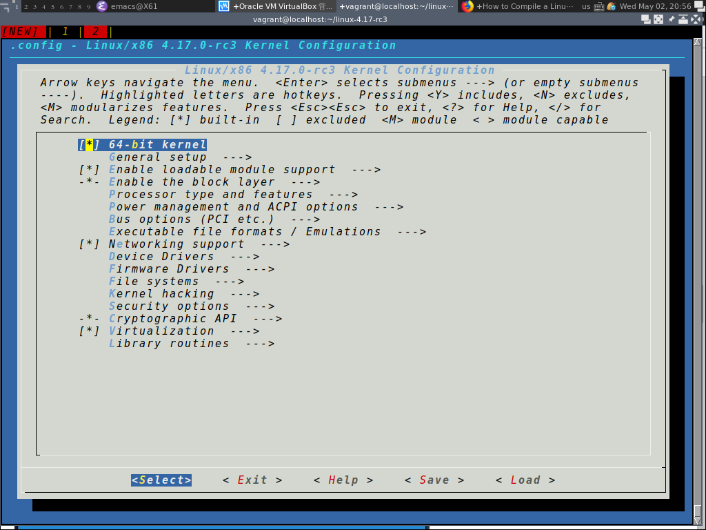
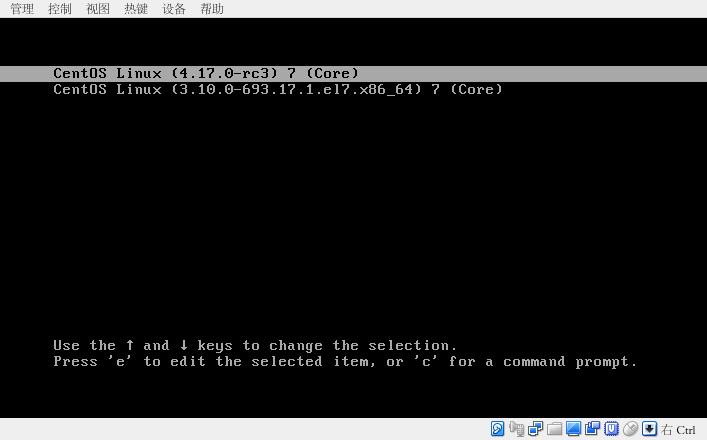

编译linux kernel
从kernel.org下载内核源码
在kernel.org上你能看到几种类型的内核存在:
- mainline
- 最新版本的linux内核，发布新版本后会打开一个合并窗口，接受下一版本要做出的该病，合并窗口关闭后，就会发布新的rc(即release candidate，发布候选)版内核
- stable
- 这是一个主要针对过去发布的内核进行bug修复的树，它更加的稳定
- linux-next
- 为发布将来的版本而累积新代码并进行测试的源码树
- longterm
- Long Term Support,长期维护的意思
curl -L https://git.kernel.org/torvalds/t/linux-4.17-rc3.tar.gz -o linux-4.17-rc3.tar.gz
如果下载的是stable或longterm内核，还有对应的sign文件进行校验
gpg2 --locate-keys torvalds@kernel.org gregkh@kernel.org xz -cd $代码文件 | gpg2 --verify $sign文件 -
安装必要的软件
sudo yum install -y gcc elfutils-libelf-devel ncurses-devel bc openssl-devel flex bison
解压源代码
tar -zxvf linux-4.17-rc3.tar.gz
将当前kernel的配置信息应用到新kernel
cp /boot/config-$(uname -r) linux-4.17-rc3/.config.config中保存的就是内核编译的相关设置。它的内容大致是这样的:tail linux-4.17-rc3/.config
# CONFIG_FONTS is not set CONFIG_FONT_8x8=y CONFIG_FONT_8x16=y CONFIG_SG_POOL=y CONFIG_ARCH_HAS_SG_CHAIN=y CONFIG_ARCH_HAS_PMEM_API=y CONFIG_ARCH_HAS_UACCESS_FLUSHCACHE=y CONFIG_SBITMAP=y CONFIG_PARMAN=m # CONFIG_STRING_SELFTEST is not set
其中，以
#开头的行就是注视行，这些CONFIG_*就是设置项，这些设置项与linux内核的各功能相对应，它的值有三种分别表示编译时的三种操作：- CONFIG_*=y
- 表示该项目所对应的功能会被静态地添加到内核中
- CONFIG_*=m
- 表示该项目对应的功能会被编译成模块，在内核需要时再加载入内核
- # CONFIG_* is not set
- 表示不编译该项目对应的功能
注意： 由于内核间功能的相互依赖十分复杂，因此不要尝试手工编辑
.config文件,否则可能出现编译失败，或者编译后内核无法执行的情况！配置kernel
cd linux-4.17-rc3 make menuconfig
启用/禁用好模块后，选择
Exit退出编译kernel
make
这一步的耗时非常长，而且会占用很多空间，比如我编译完之后，大约占据了11G的空间。
将内核安装到系统中
编译完成后，就可以将生成的内核安装到系统中了，安装时需要root权限
安装过程分为两个阶段进行。第一个阶段是模块的安装:
sudo make modules_install
这会把编译后的模块安装到
/lib/modules下ls /lib/modules
3.10.0-693.17.1.el7.x86_64 4.17.0-rc3
这里
4.17.0-rc3就是新安装的模块第二阶段是安装内核二进制映像文件,并生成boot初始化文件系统映像
sudo make install
这会在
/boot下生成新的内核映射文件。ls -l /boot/*4.17*
-rw-------. 1 root root 38754397 May 5 06:59 /boot/initramfs-4.17.0-rc3.img -rw-r--r--. 1 root root 3512799 May 5 06:21 /boot/System.map-4.17.0-rc3 -rw-r--r--. 1 root root 7238272 May 5 06:21 /boot/vmlinuz-4.17.0-rc3
其中
- initramfs-内核版本 / initrd.img-内核版本 为boot初始化文件系统映像
- System.map-内核版本 为地址信息文件
- vmlinuz-内核版本 为内核映像文件
若在Debian及其衍生版本中编译内核，你会发现不会自动生成
initramfs-内核版本文件，则需要执行下面命令手工生成sudo update-initramfs -c -k 内核版本
设置GRUB，从当前安装的内核启动
sudo grub2-set-default linux-4.17-rc3
重启后就能看到新内核了
